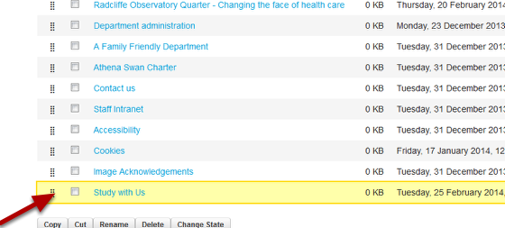

You can add a link to another section of your website or an external website in the lefthand navigation:
Go to the section or page where you would like to add a link. If you add the link to a section it forms another item in the navigation list. If you add it to a page it will form a sublink to that page. Select Link from the Add new drop down list on the toolbar at the top of the page.
Click on the State drop down list on the toolbar at the top of the page. Select Publish.
Your link is added to the bottom of the navigation if you added it to the section. If you added it to a page it appears under the link to that page.
If you would like to move your link to a different position in the list click on Contents on the top tool bar.
Click on the set of dots and drag the link to where you want it to appear in the navigation.